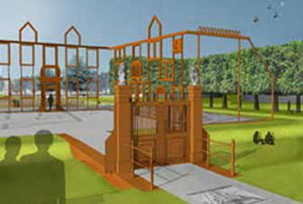

Introductie van spel:
Ruim honderd jaar geleden, in 1914, werd uit de Buunder een reusachtige snoek gevangen, meer dan anderhalve meter lang, en deze snoek droeg een soldaten- cape…. Het bleek de cape te zijn van officier de Roo van de compagnie, die ooit gelegen was in Tilburg. In 1831 is de Roo verdronken bij het zwemmen in de Buunder. In 1844 op tweede kerstdag voltrok zich wederom een drama. De 19 jarige zoon van Adriaan Maiers verdronk bij het schaatsen, vluchtend voor lansiers van het Tilburgse garnizoen die de schaatsende burgers van het ijs joegen. De geesten van De Roo en Maier hebben nooit rust gevonden. Zij bleven vele jaren zwerven over de moerassige gronden van Moerenburg. Soms zochten zij de warmte op van het café de Baars niet ver van De Buunder. Daar zwaaide waardin, Mie de Baars, de scepter. De Roo en Maier verborgen zich daar op de zolder. Zij hoorden er bezoekers druk praten over de ruzies tussen Tilburg, Oisterwijk en Berkel Enschot. De ruzies gingen over het vuile water dat door de Leij en de Korvelsche waterloop van Tilburg naar het oosten stroomde. Gewassen wilde niet meer groeien, koeien die van het water dronken werden ziek, gaven giftige melk en vielen dood neer……… Mie de Baars moest dikwijls de partijen uit elkaar houden. De Roo en Maier hoorden het aan en besloten te proberen het water te zuiveren. Misschien zou het voldoen aan deze opdracht hun rust schenken. Toen de Roo en Maier besloten op pad te gaan, kwam uit een andere hoek van de zolder een donkere en vriendelijke stem:

Ik ben de geest van Pastoor Wichmans, schrik niet, ook ik zoek al van 1642, het jaar van mijn sterven, rust.
Sinds Huize Moerenburg in 1750 is afgebroken woon ik hier op zolder.
Huize Moerenburg was in bezit van de abdij van Tongerlo.
Ik heb de abt beloofd te waken over de wateren van Moerenburg tot er jongeren komen die mijn taak overnemen.
Ik smeek jullie, neem mij mee naar de restanten van het landhuis.
Als jullie op de weg er naar toe 8 opdrachten volbrengen,
vinden wij onze eeuwige rust en zullen de wateren van Moerenburg zuiver zijn! Daarna zullen jullie jonge Tilburgers moeten vinden die dezelfde opdrachten uitvoeren.
Stop 4.

Met de voeten in de moerige grond Zoeken Wilgen water en licht vanaf de ochtendstond. Geknot bieden zij in hun dichte kruin een veilig huis. Vogels, insecten, vleermuizen voelen zich er thuis. Het knotten doet de wilg geen pijn Er kunnen belangrijke redenen voor zijn. Zoek welk belang het knotten dient, Heb je het goed, dan heb je opdracht 4 verdient!
Stop 6.

Wij zijn de wachters van het water, wachters van het bos. Eenmaal voorbij gelopen laten we je niet los. We zijn grijs of wit van bast Het lijkt of ze ogen op ons hebben gekwast Rond 1700 kwam onze familie in dit land Aanvankelijk voor tuinen en parken geplant Kijk goed hier in de bocht van het pad Je hebt dan al vele wachters met grote ogen gehad Maar de opdracht is pas echt gedaan Als je op de hoogte bent van de bijzondere naam Die de ogen is aangedaan…………..
Stop 7.
 Hier bij dit water-monument
Is veel te lezen,
het duurt wel even
Voordat je aan de letters bent gewend.
Loop er rap naar toe en doe drie stappen terug.
Je snapt het dan wel vlug.
De teksten gaan over water en zuivering,
hier in Moerenburg een heel belangrijk ding.
En als je dan achter het monument goed kijkt,
Zie je welke plant daar in de groeven prijkt.
Het is er opzettelijk in aangebracht
Omdat aan milieu vriendelijk water-zuiveren werd gedacht.
Zoek op welke plant je hier ziet
Heel erg moeilijk is het niet!
Hier bij dit water-monument
Is veel te lezen,
het duurt wel even
Voordat je aan de letters bent gewend.
Loop er rap naar toe en doe drie stappen terug.
Je snapt het dan wel vlug.
De teksten gaan over water en zuivering,
hier in Moerenburg een heel belangrijk ding.
En als je dan achter het monument goed kijkt,
Zie je welke plant daar in de groeven prijkt.
Het is er opzettelijk in aangebracht
Omdat aan milieu vriendelijk water-zuiveren werd gedacht.
Zoek op welke plant je hier ziet
Heel erg moeilijk is het niet!
Stop 8.

Ooit hadden Tilburg, Oisterwijk en Berkel een levensgroot conflict: Het vuile water uit Goirle en Tilburg werd niet gepikt Rechters bepaalden dat er een som geld moest worden voldaan Om de Leij en Waterloop oostwaarts te laten gaan. Heden ten dage is er echter een moeras met riet Geleerden spreken over Helofyt Zoek ter plaatse het plakkaat Waar alle informatie op staat. Geef als de zoektocht is voldaan In duidelijke woorden aan Wat het resultaat is als het water lang genoeg In het zuiveringsmoeras heeft gestaan. Daarna kan je voorwaarts naar opdracht 8 gaan
Stop 9.

Als nu alle 8 de opdrachten zijn voldaan En je voldoende ontberingen hebt doorstaan Kan je, evenals Maier en de Roo, Huize Moerenburg binnen gaan. Pastoor Wichmans vond hier ooit zijn rust Maar ook jij bent vanaf nu milieu bewust In navolging van vele anderen Kan je gezamenlijk de geschiedenis veranderen Nu je dit huis bent binnengeschreden Ben je onderdeel van een historie met een rijk verleden Je bent gemachtigd je te melden In een lange rij van helden Die “Hoeders van Moerenburgs wateren “ mogen heten En nimmer en nooit hun opdracht zullen vergeten Namelijk, dat zij zullen waken over sloot, beek, waterloop en vennen En nooit aan watervervuiling willen wennen.
Huize Moerenburg Zoek de geheime code bij de tegels Lees ze goed ook tussen de regels
Tegel 112 letter 3
Tegel 120 letter 2
Tegel 36 letter 5
Tegel 122 letter 1
Tegel 75 letter 7
Tegel 89 letter 4
Tegel 116 letter 8
Tegel 105 letter 1
Tegel 123 letter 2
Tegel 84 letter 3
Tegel 112 letter 3
Tegel 120 letter 2
Tegel 36 letter 5
Tegel 59 Letter 1
Tegel 45 letter 5
Tegel 95 letter 2
Tegel 100 letter 2